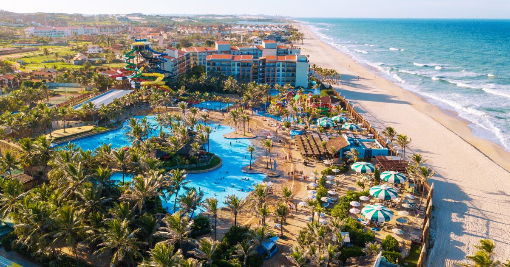

Um dia desses, estavamos pensando em fechar um pacote de viagens com dois destinos, para descansarmos e aproveitar as ferias
Nós começamos uma jornada em Fortaleza-Ce, com a primeira parada em Jericoacoara.
Em Maceio iremos visitar maragogi
Na praia do Futuro, nos ficamos no terraço Orbita Blue localizada em Fortaleza.

E fazer o passeio do dia com os turistas no beach park
Acompanhar o guia e aproveitar o maximo.
Explorando as praia, encontramos uma ilha muito bela
Em maceio, a busca por Maragogi
Em maceio, finalmente encontramos o caribe brasileiro.
A praia à esquerda leva você a uma ilha escondida
A ilha a direita tem belas vistas

Dentro da cidade encontramos varias feirinhas
E por ultimo destino praia de ponta verde.